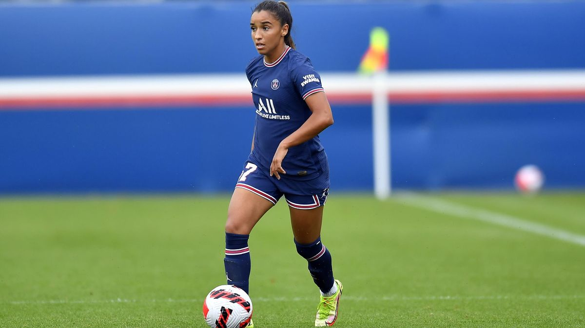
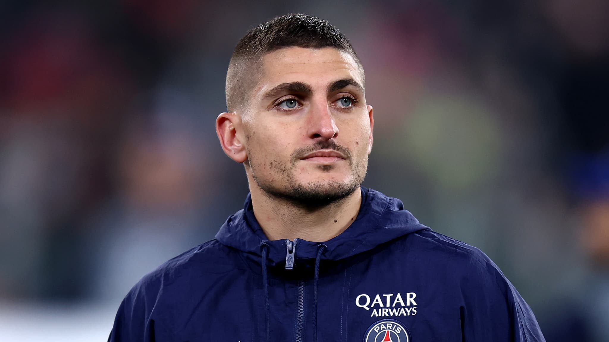
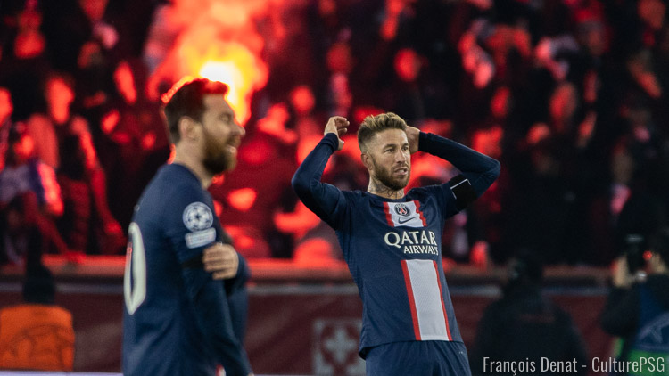
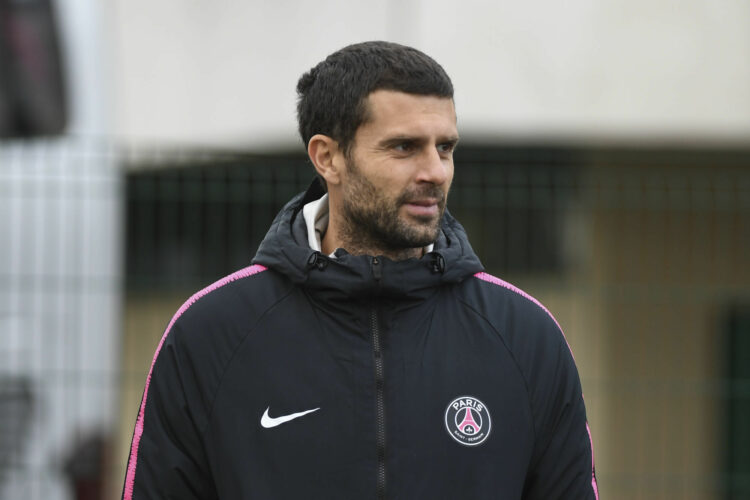
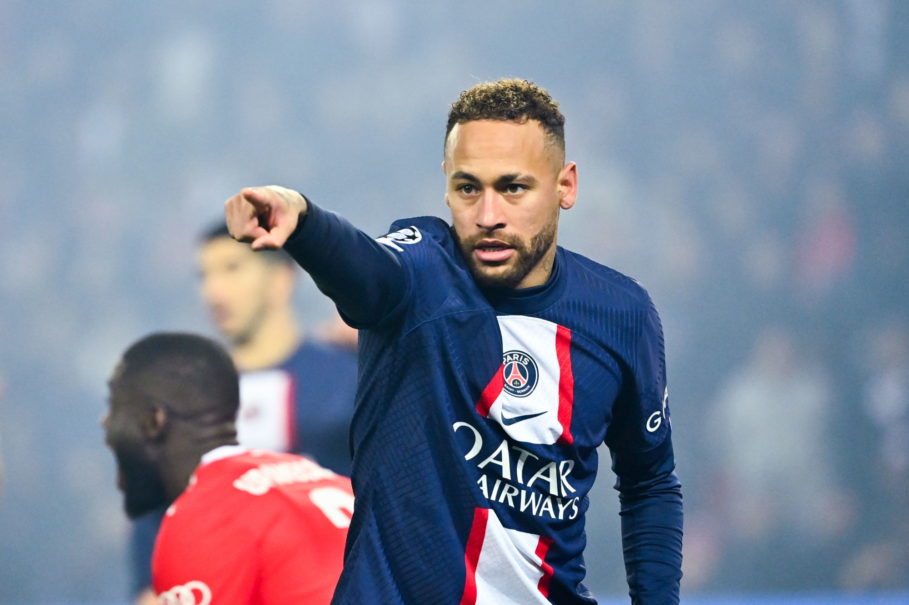
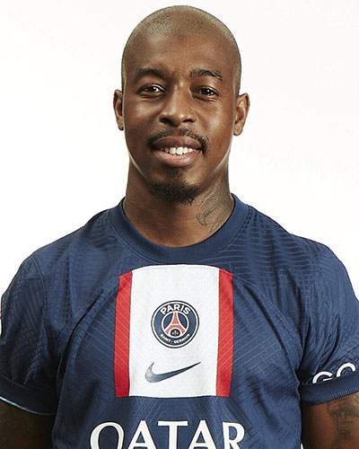

Accueil
Football
Judo
Football féminin
Paris-Saint-Germain
Le club de la capitale décrypté en long et en large
Site officiel du PSG
Football
Judo
Football féminin

Actualités du Paris-Saint-Germain
Mbappé en tête du classement des plus gros salaires

Des contrats sur mesure en fonction des matchs joués

Le PSG n'envisage pas de prolonger Messi et Ramos

Thiago Motta entraîneur au PSG?
Portraits de joueurs
Portrait de Kylian Mbappé
Portrait de Messi

Portrait de Neymar

Portrait de Presnel Kimpembe